<meta charset="utf-8"><meta name="viewport" content="width=device-width,initial-scale=1">
<title>Vesper Art Drafts</title>

<style>
html{background:var(--bg)}body{margin:0}

:root{--bg:#f3efe9;--fg:#2a2420;--muted:#6b6058;--line:#d9d0c4;--card:#fffdf9;--accent:#7a3b2e;--ok:#2f6b3a;--warn:#9a5b00;--bad:#9b2c2c;--mono:ui-monospace,Consolas,monospace}
@media (prefers-color-scheme:dark){:root:not([data-theme="light"]){--bg:#1b1714;--fg:#ece4d8;--muted:#a09484;--line:#3a322b;--card:#241f1b;--accent:#d9a066;--ok:#7fc58b;--warn:#e0b050;--bad:#e58a8a;color-scheme:dark}}
:root[data-theme="dark"]{--bg:#1b1714;--fg:#ece4d8;--muted:#a09484;--line:#3a322b;--card:#241f1b;--accent:#d9a066;--ok:#7fc58b;--warn:#e0b050;--bad:#e58a8a;color-scheme:dark}
body{background:var(--bg);color:var(--fg);font:16px/1.55 "Source Serif 4",Georgia,serif;padding-block:28px 64px;padding-left:max(16px,env(safe-area-inset-left,0px));padding-right:max(16px,env(safe-area-inset-right,0px))}
main{max-width:1100px;margin:0 auto;display:flex;flex-direction:column;gap:36px}
h1{font:600 2rem/1.15 "Cinzel",Georgia,serif;margin:0;text-wrap:balance}
h2{font:600 1.25rem/1.2 "Cinzel",Georgia,serif;margin:0}
p{margin:0;max-width:65ch}
.sub{color:var(--muted)}
section{display:flex;flex-direction:column;gap:12px}
.head{display:flex;flex-wrap:wrap;gap:8px 14px;align-items:baseline}
.score{font:600 .85rem var(--mono);padding:2px 8px;border:1px solid currentColor;border-radius:4px}
.ok{color:var(--ok)}.warn{color:var(--warn)}.bad{color:var(--bad)}
.row{display:flex;flex-wrap:wrap;gap:16px;align-items:flex-start}
figure{margin:0;display:flex;flex-direction:column;gap:6px;min-width:0}
figure a{display:block;line-height:0}
img{display:block;border:1px solid var(--line);background:var(--card);max-width:100%;height:auto}
figcaption{font:.8rem var(--mono);color:var(--muted)}
.big img{width:min(100%,560px)}
.tall img{width:min(100%,360px)}
.q{background:var(--card);border:1px solid var(--line);padding:16px 20px;display:flex;flex-direction:column;gap:8px}
.q ol{margin:0;padding-left:1.2em;display:flex;flex-direction:column;gap:6px}
a{color:var(--accent)}
</style>
<link rel="stylesheet" href="https://fonts.googleapis.com/css2?family=Cinzel:wght@600&family=Source+Serif+4&display=swap">
<main>
<header>
<h1>Vesper Art Drafts</h1>
<p class="sub">Portrait, idle, icons. Nothing is in the game yet. Tap any image for full size.</p>
</header>

<section class="big">
<div class="head"><h2>Portrait</h2><span class="score ok">8/10</span></div>
<p class="sub">Elderly abbess, solid white eyes, gold crown, bell on her back. Magenta background is removed at install.</p>
<div class="row">
<figure><a href="vesper-art/portre.webp" target="_blank">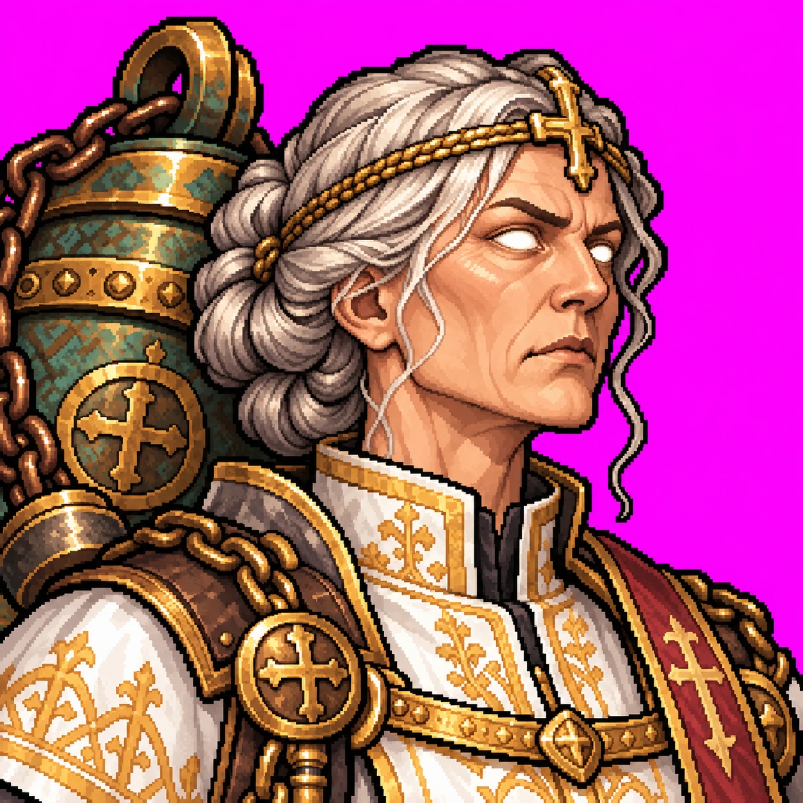</a><figcaption>portre.png 1254×1254</figcaption></figure>
<figure><a href="vesper-art/avatar.webp" target="_blank">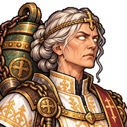</a><figcaption>avatar.png (derived)</figcaption></figure>
</div>
</section>

<section class="tall">
<div class="head"><h2>Idle</h2><span class="score ok">9/10</span></div>
<div class="row">
<figure><a href="vesper-art/idle.webp" target="_blank">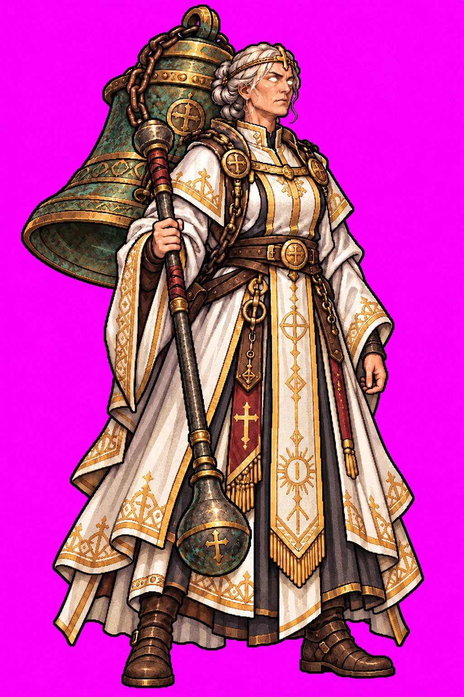</a><figcaption>idle.png 1024×1536</figcaption></figure>
<figure><a href="vesper-art/idle-sprite.webp" target="_blank">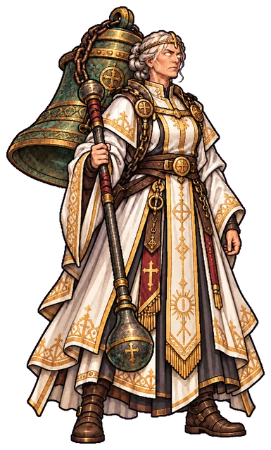</a><figcaption>idle-sprite.png (derived)</figcaption></figure>
</div>
</section>

<section class="big">
<div class="head"><h2>Skill icons and class logo</h2><span class="score ok">8/10 each</span></div>
<p class="sub">Sol: Toll 8, Thunderpeal 8, Cracked Bell 8, Great Bell 8, class logo 8. Background removed. Top row 128px, bottom row 64px.</p>
<figure><a href="vesper-art/onizleme-yeni.webp" target="_blank">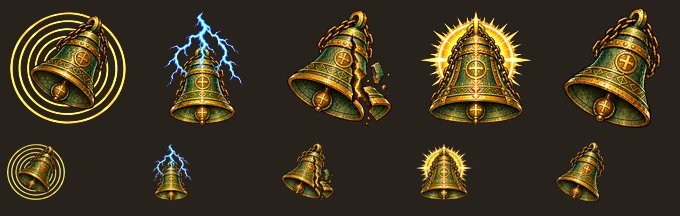</a><figcaption>onizleme-yeni.png</figcaption></figure>
<div class="row">
<figure><a href="vesper-art/gross-toll.webp" target="_blank">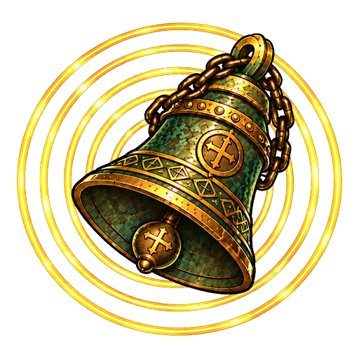</a><figcaption>Toll</figcaption></figure>
<figure><a href="vesper-art/gross-thunderpeal.webp" target="_blank">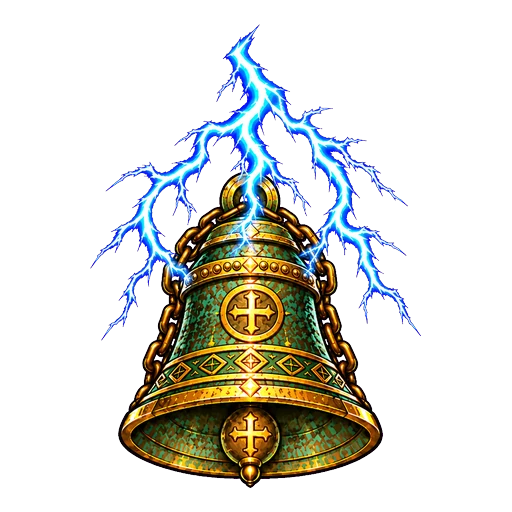</a><figcaption>Thunderpeal</figcaption></figure>
<figure><a href="vesper-art/gross-cracked_bell.webp" target="_blank">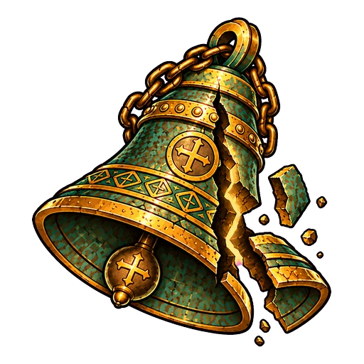</a><figcaption>Cracked Bell</figcaption></figure>
<figure><a href="vesper-art/gross-great_bell_of_valdoria.webp" target="_blank">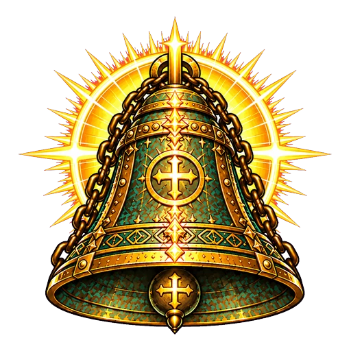</a><figcaption>Great Bell of Valdoria</figcaption></figure>
<figure><a href="vesper-art/gross-sinif-logosu.webp" target="_blank">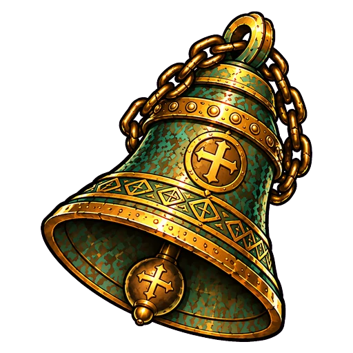</a><figcaption>Class logo</figcaption></figure>
</div>
</section>

<section class="big">
<div class="head"><h2>Passive: Pealing Bells</h2><span class="score ok">8/10</span></div>
<figure><a href="vesper-art/pasif.webp" target="_blank">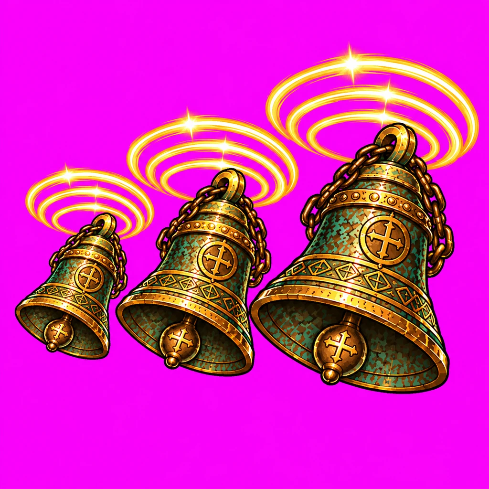</a><figcaption>pasif.png 1024×1024</figcaption></figure>
</section>

<section class="q">
<h2>Still waiting on you</h2>
<p>Portrait, idle and Pealing Bells are not installed until you answer the form.</p>
</section>
</main>
